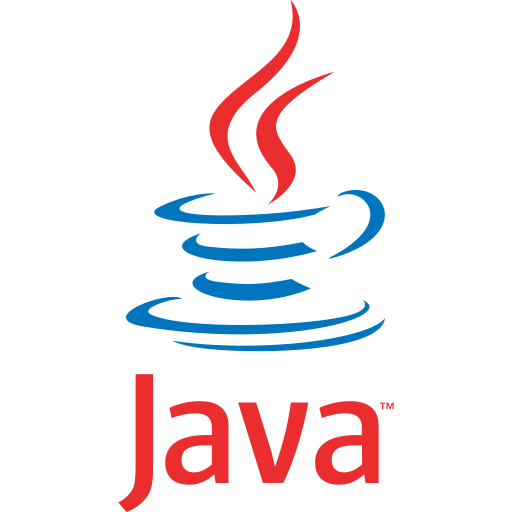

<!DOCTYPE html>
<html lang="en">
<head>
    <meta charset="UTF-8">
    <meta http-equiv="X-UA-Compatible" content="IE=edge">
    <meta name="viewport" content="width=device-width, initial-scale=1.0">
    <title>CBIT | Durga Devi</title>
    <link rel="stylesheet" href="styles.css">
    <script src="script.js"></script>
</head>
<body>
    <div class="heading">
        <h1>Chaitanya Bharathi Institute of Technology</h1>
    </div>
    <div id="mySidenav" class="sidenav">
        <a href="javascript:void(0)" class="closebtn" onclick="closeNav()">&times;</a>
        
        <h2 id="name">Mrs. S. Durga Devi</h2>
        <nav>
            <a href="#home" class="active" >Home</a>
            <a href="#education">Education</a>
            <a href="#courses">Courses</a>
            <a href="#publications">Publications</a>
            <a href="#speaker">Speaker</a>
            <a href="#trainings">Trainings</a>
            <a href="#journals">Journals</a>
            <br><br>
            <br><br>
        </nav>
      </div>
    <div id="main">
        <span id ="open" style="font-size:30px;cursor:pointer" onclick="openNav()">&#9776;</span>
        <section id="home" class="home">
            
            <h2>Mrs. S. Durga Devi</h2>
            <h3>Current position : </h3>
            <p>Assistant Professor, Department of Computer Science and Engineering,Chaitanya Bharathi Institute Of Technology, Hyderabad, Telanagana, India - 500075</p>
            <p>Nature of Job/Appointment : Regular</p>
            <p>Date of Joining : 02-11-2016</p>
            <a href="mailto:sdurgadevi_cse@cbit.ac.in">&#x2709;&#9;sdurgadevi_cse@cbit.ac.in</a>
            <a href="">&#x1F4DE;&#9;+91 9440698267</a>
        </section><br>
        <section id="education" class="edu">
            <h2>Education</h2>
            <table>
                <tr>
                    <th>Qualification</th>
                    <th>Name of the Degree</th>
                    <th>Class</th>
                </tr>
                <tr>
                    <td>Ph.D</td>
                    <td>Doctor of Philosophy(CSE)</td>
                    <td>Pursuing</td>
                </tr>
                <tr>
                    <td>PG</td>
                    <td>M. Tech (CS)</td>
                    <td>Distinction</td>
                </tr>
                <tr>
                    <td>UG</td>
                    <td>B.E (CSE)</td>
                    <td>First Class</td>
                </tr>
            </table>
        </section>
        <hr>
        <section id="courses" class="courses">
            <h2>Courses</h2>
            <p>Programming and Problem Solving, C++, Data Structures, Advanced Data Structures using C++, Web Technologies, Operating Systems,  Mobile Application Development, Object Oriented Programming  using java, Object Oriented programming using Python, Basics of  Data Structures, Linux programming and Scripting Languages,  Computer Architecture and Organization, Data communications and  Computer Networks, Unix and Shell Programming.Mobile Application Development, Advanced Operating Systems  </p>
            <div>
                
                
            
            </div>
        </section>
        <hr>
        <section id="publications">
            <h2>Publications</h2>
            <ul>
                <li>National Journals – 0</li>
                <li>International Journals - 8</li>
                <li>National Conference – 0</li>
                <li>International Conference – 3</li>
            </ul>   
        </section>
        <hr>
        <section id="speaker">
            <h2>Invited Speaker</h2>
            <p>Guest Lecture on “I/O Streams and Strings” as a resource person in “A Three-Day Workshop on OOP through C++”, a technical training programme organized by Department of CSE, CBIT, Hyderabad during 19-06-2017 to 21-06-2017.</p>
           
        </section>
        <hr>
        <section id="trainings">
            <h2>Short-Term Training Programs/Faculty Development Programs/Seminars/Workshops</h2>
            <ol>
                <li>Completed course on “Learning Analytics Tools” offered by NPTEL-AICTE from Jul- 21 to Oct-21.</li>
                <li>FDP completed the “Learning Analytics Tools” offered by NPTEL-AICTE from Jul-21 to Oct-21.</li>
                <li>Participated and successfully completed 5 day online FDP on the theme “Inculcating Universal Human values in Technical Education “organized by AICTE from 26th,July,2021 to 30th, July, 2021.</li>
                <li>Organized Five day international STTP on “Building DataDriven Solutions Using Data Analytics with ML and DL Algorithms” during 24-28,June,2021 organized by Department of CSE, CBIT(A),Hyderabad, Telangana, Hyd.</li>
                <li> Participated and successfully completed ATAL FDP on“Role of Augment Reality and Virtual Reality in Real time applications” organized by Nelson Mandela Marg, Vasant kunj, New Delhi from 2021-06-07 to 2021-06-11.</li>
                <li>Presented a Paper entitled “Triple Authentication approach for accurate Voting System ” in International Conference on “Innovations in Computer Networks, Computational Intelligence and IoT” [ICICCI-21] (Online Mode) on 25th & 26th June 2021 organized by Department of Computer Science and Engineering, St. Martin’s Engineering College, Dhulapally, Secunderabad – 500 100, Telangana.</li>
                <li>Completed course on “ Fundamentals of Artificial Intelligence” offered by NPTEL-AICTE from July- 20 to Nov20.</li>
                <li>Completed course on “ Fundamentals of Artificial Intelligence” offered by NPTEL-AICTE from July- 20 to Nov20.</li>
                <li>Organized Five-Day International E-Workshop On Building Data-Driven Solutions Using Data Analytics with ML and DL Algorithms , Dept of CSE, CBIT,Hyderabad from 24th – 28th June, 2021.</li>
                <li>participated and successfully completed the 5-day online FDP on the theme “Inculcating Universal Human Values in Technical Education” organized by All India Council for Technical Education(AICTE) from 26 July, 2021 to 30 July, 2021.</li>
                <li> Participated and successfully completed ATAL FDP on “Role of Augment Reality and Virtual Reality in Real time applications” organized by Nelson Mandela Marg, Vasant kunj, New Delhi from 2021-06-07 to 2021-06-11.</li>
                <li>Presented a Paper entitled “Triple Authentication approach for accurate Voting System ” in International Conference on “Innovations in Computer Networks, Computational Intelligence and IoT” [ICICCI-21] (Online Mode) on 25th & 26th June 2021 organized by Department of Computer Science and Engineering, St. Martin’s Engineering College, Dhulapally, Secunderabad – 500 100, Telangana. </li>
                <li>Completed course on “ Fundamentals of Artificial Intelligence” offered by NPTEL-AICTE from July- 20 to Nov20.</li>
                <li>Organized Five-Day International E-Workshop On Building Data-Driven Solutions Using Data Analytics with ML and DL Algorithms , Dept of CSE, CBIT,Hyderabad from 24th – 28th June, 2021.</li>
                <li>participated and successfully completed the 5-day online FDP on the theme “Inculcating Universal Human Values in Technical Education” organized by All India Council for Technical Education(AICTE) from 26 July, 2021 to 30 July, 2021.</li>
                <li>Participated in the AICTE sponsored online Short Term Training Programme on “Internet of Things(Everything)–Future” slot 2 organized by Department of Computer Science and Engineering, B S Abdur Rahman Crescent Institute of Science and Technology, from 07-09-2020 to 12-09-2020.</li>
                <li>Participated in Android Development with Kotlin Train- the Trainer program from 31-08-20 to – 05-09-2020 , organized by Google.</li>
                <li>Attended two week online Faculty Development program on " Python", from 22-06-2020 to 04-07-2020, jointly organized by Department of ECE, JSS Academy of Technical Education, Noida and Spoken Tutorial Project, Indian Institute of Technology, Bombay, Funded by National mission on Education Through ICT, MHRD, Government of India.</li>
                <li>Participated in Two Day online workshop on “DevOps” organized by Department of Information Technology, Kakatiya Institute of Technology & Science, Warangal during 12-07-202 to 13-07- 2020.</li>
                <li>Participated in the IIC Online Sessions conducted by Institution's Innovation Council (IIC) of MHRD's Innovation Cell, New Delhi to promote Innovation, IPR, Entrepreneurship, and Start-ups among HEIs from 28-04-2020 to 22-05-2020 during COVID-19 nationwide lockdown.</li>
                <li>Participated in the one week online refresher course on “ BharateeyaChaitanyam” organized by GeervanaBharathi of Chaitanya Samskruthi during 29-06-2020 to 05-07-2020.</li>
                <li>Attended One week Faculty Development Programme on PHP & MySQL from 18-05-2020 to 23-05-2020 organized by Department of CSE, JNTUH College of Engineering, Jagtial in association with Spoken Tutorial IIT-Bombay</li>
                <li>Participated in a 5 Day Faculty Development Program organized by Department of Computer Science and Engineering, CMR Technical Campus, Hyderabad on Artificial Intelligence and Machine Learning from 18-05-2020 to 22-05-2020.</li>
                <li>Attended a One week Faculty Development Program on "Outcome Based Education and NBA Accreditation Processs-(UG)", during 28-05-2020 to 01-06-2020.</li>
                <li>Participated and Completed AICTE Training And Learning (ATAL) Academy online FDP on “ Artificial Intelligence” from 08-06-2020 to 12-06-2020 at NIT, Jamshedpur.</li>
                <li>Attended one week online Faculty Development Program on “OUTCOME BASED EDUCATION: A STEP TOWARDS EXCELLENCE” from 11-05-2020 to 15-05-2020 under Margdarshan Scheme of AICTE, New Delhi.</li>
                <li>Participated in One Week Faculty Online Development Program on “OUTCOME BASED EDUCATION” organized by Chaitanya Bharathi Institute of Technology, Hyderabad 28-05-2020 to 1-06-2020.</li>
                <li>Participated in the Online Workshop on “ Social Responsibility and Community Engagement” organized by Chaitanya Bharathi Institute of Technology, Hyderabad on 17-06-2020</li>
                <li>Participated in the webinar on “Virtual Reality” hosted by Department of Computer Science and Applications in association with PANTECH, at ChaitanyaBharathi Institute of Technology, Hyderabad on 14-05-2020.</li>
                <li>Participated in a webinar on "Data science and Career Opportunities" organized by Department of CSE held on 06-06- 2020.</li>
                <li>Participated in the Leadership talk With Mr Mahesh Babu CEO Mahindra Electric Mobility Ltd. India's First Leadership Talk Series Session with Mr Mahesh Babu CEO Mahindra Electric Mobility Ltd. by MHRD's Innovation Cell.</li>
                <li>Participated in the Leadership Talk With Dr. Pramod Chaudhari, Founder, Chairman, Praj Industries Limited and Dr. AbhayJere, Chief Innovation Officer MHRD Innovation Cell, Saturday, 16-05-2020 at 01.00 PM by MHRD's Innovation Cell.</li>
                <li>Participated in the Leadership Talk With Dr. Nilesh N Oak, Expert (Indian Civilization & History) held on 30-05-2020 Dr. AbhayJere (Chief Innovation Officer- MHRD Innovation Cell, Govt. of India) Hosting Live session of Leadership Talk With Dr. Nilesh N Oak, Expert (Indian Civilization & History) by MHRD's Innovation Cell</li>
                <li>Participated in the Leadership talk with Ms. Ashwini Deshpande (Co-Founder & Director Elephant Design) held on 06-06-2020 by MHRD's Innovation Cell.</li>
                <li>Participated in a one hour live webinar titled " DIGITAL TRANSFORMATION" conducted by Storm Overseas on 12-05-2020.</li>
                <li>Participated in the webinar on "Blaze a trail in Data Science Project journey" by Dr. DV Ramana, Data Strategist, Wissen Infortech, conducted by St. Francis College for women, Begumpet, Hyderabad on 20-05-2020, May,2020.</li>
                <li>Participated in webinar conducted on topic " NexGen Solutions Amidst COVID -19" presented by Mr. Siva Polimetla, Head ER&D, NASSCOM. Organized by dept of ME, Anurag Group of Institutions, Ghatkesar on 24-05-2020.</li>
                <li>Attended “Python 3.4.3” organized by Spoken Tutorial Project, IIT Bombay, funded by National Mission on Education through ICT, MHRD, Govt., of India on 06-05-2020.</li>
                <li>Successfully Completed “AI for Everyone” an online noncredit course authorized by deeplearning.ai and offered through Coursera on 02-05-2020.</li>
                <li>Successfully Completed “Programming for Everybody ( Getting Started with Python)” an online non-credit course authorized by University of Michighan and offered through Coursera on 02-05-2020.</li>
                <li>Successfully Completed “Crash course on Python” an online non-credit course authorized by Google and offered through Coursera on 05-05-2020.</li>
                <li>Successfully Completed “ Python Data Structures” an online non-credit course authorized by University of Michighan and offered through Coursera on 03-05-2020.</li>
                <li>Successfully Completed “ Using Python to access web data” an online non-credit course authorized by University of Michighan and offered through Coursera on 10-05-2020.</li>
                <li>Attended one day workshop “ IoT for Real World” on 28-11-2019, at CBIT Hyd.</li>
                <li>Attended one day workshop “ Access to Research Process Schools of Thought” on 18-11-2019, at CBIT Hyd.</li>
                <li>Attended Two Day Conference “TECHTARA- A 2day conference to “Celebrate, Inspire, Network” Women in Technology and Society” from 6th – 7-03- 2019, at CBITHyd.</li>
                <li>Attended Twelve Week Online FDP on “NPTEL Problem solving using C” organized by Prof.AnupamBasu, Dept. of CSE, IIT Karagpur, 01-04- 2019.</li>
                <li>Attended Twelve Week Online FDP on “NPTEL Programming in Java” organized by Prof.Debasis Samantha, Dept. of CSE, IIT Karagpur, 01-04- 2019.</li>
                <li>Attended One week FDP on “In-House training center FDP” on Nov, 26-30,2018, CBIT Hyderabad.</li>
                <li>Attended FDP on “Interface of Statistical Analysis using R” on 09-02-2017 to 10-02-2017,CBIT, Hyderabad.</li>
                <li>Attended one week Workshop on “Emerging Trends, Issues and challenges in Big data and cloud computing” from 20-02-2017 to 25-02-2017, CBIT Hyd</li>
                <li>Attended Two Day Workshop on “Privacy Preserving and ICT: Research Ideas” from 02-03-2017 to 03-03- 2017, CBIT Hyd.</li>
                <li>Attended Two Day Workshop on “Internet of Things using Raspberry Pi 3” from 06-03-2017 to 07-03-2017 CBIT Hyd.</li>
                <li>Attended one week FDP on “Meeting the challenges of teacher in modern engineering education” from 12-06-2017to 17-06-2017, at Cbit, Hyderabad.</li>
                <li>Attended Two Day Workshop on “Big Data and Machine Learning” from 27-03-2017 to 28-03-2017, CBIT Hyd.Details of Journal Publications/ Conferences (National and International)</li>
            </ol>
        </section>
        <hr>
        <section id="journals">
            <h2>International/National Journals</h2>
            <ol>
                <li>Presented a paper entitled “Triple Authentication approach for accurate Voting System ” in International Conference on “Innovations in Computer Networks, Computational Intelligence and IoT” [ICICCI-21] (Online Mode) on 25th & 26th June 2021 organized by Department of Computer Science and Engineering, St. Martin’s Engineering College, Dhulapally, Secunderabad – 500 100, Telangana.</li>
                <li>Presented a Paper entitled “ Preserving Trajectory Privacy Using Personal Data Vaults” in National Conference on Make in india Organized by SNIST,Hyd from october 27,28,2016</li>
                <li>Presented a paper entitled “ Feasibility And Performance for Cellular Multicast using the Adhoc  Networks” in international conference on “Recent Trends in Computational Science,Organized by TOC H Institute of science and technology, Arnakulam, Keral, June-11th,13th, 2008.</li>
                <li>S. Durga Devi, P. Harsha Vardhan, Mirza Akber Namazi( 2021) “ COLD STORAGE MONITORING SYSTEM DURING SUPPLY CHAIN”, in GRADIVA REVIEW JOURNAL VOLUME 7 ISSUE 6 2021 ISSN NO : 0363-8057, June- 2021.</li>
                <li>S.. Durga Devi, T. Manasa Gupta, Neha Thodima(2021) “ IOT BASED SMART BOOK READER FOR VISUALLY CHALLENGED” in in GRADIVA REVIEW JOURNAL VOLUME 7 ISSUE 6 2021 ISSN NO : 0363-8057, June- 2021.</li>
                <li>S. Durga Devi,P. Navya Sree,S. Sadhana(2020) “AUTONETIC VERBALIZATION” in AC JOURNAL, VOLUME IX, ISSUE V, MAY-2020</li>
                <li>K. Spandana, S Durga Devi (2020) “Managing Groceries using Regression Methods”, Alochana Chakra Journal Volume IX, Issue V, May/2020, pp. 6968–6977</li>
                <li>Smt. S. Durga Devi(2019) “smart garbage collection” in International Journal (IJRAR), Volume 6, May2019. ISSN 43602</li>
                <li>Smt. S. Durga Devi(2018) “Prediction of heart diseases using Machine learning Techniques” in International Journal (IJTIR), Volume 5, July 2018, ISSN-2349-5162</li>
            </ol>
        </section>
        <form>
            <input type="button" value="Download" onclick="download()">
        </form>
    </div>
</body>
</html>